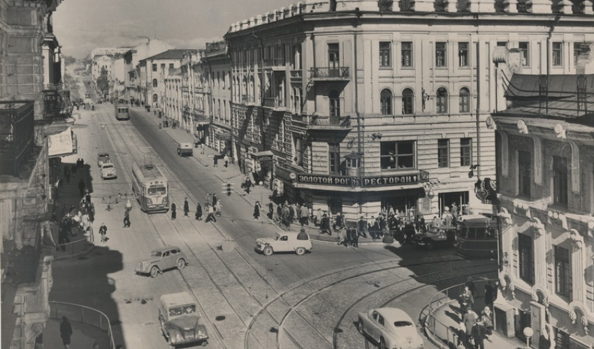
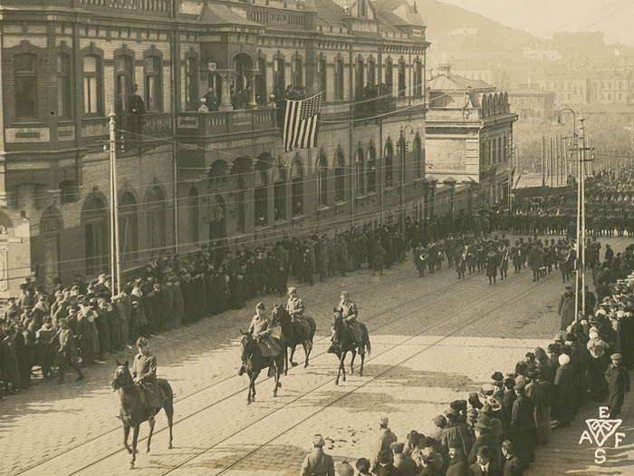
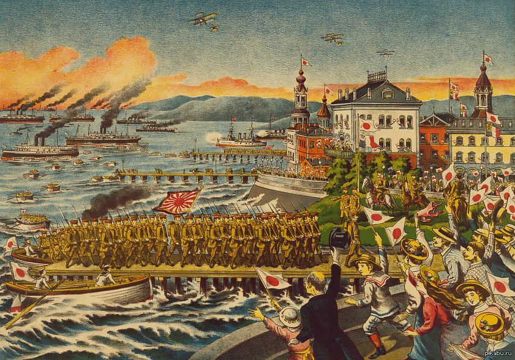
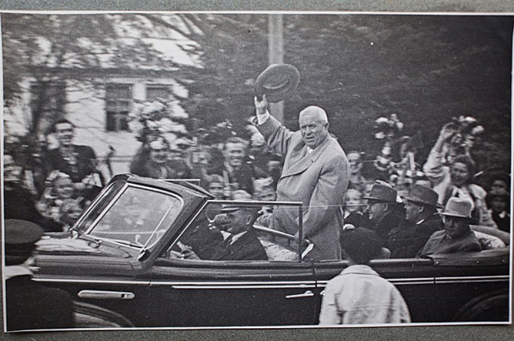
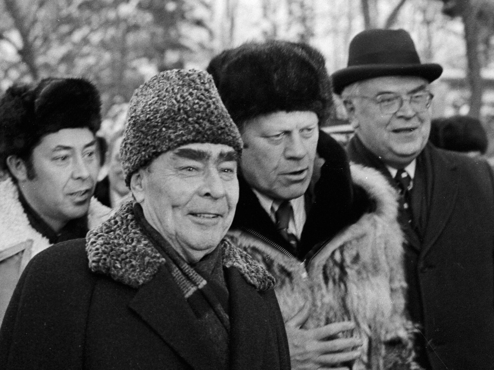

Владивосток в XX веке
Первое десятилетие XX века характеризовалось затяжным кризисом, вызванным политической обстановкой: переключение внимания правительства на Порт-Артур, боксёрское восстание в Северном Китае 1900—1901 гг., Русско-Японская война 1904—1905 гг., и наконец первая русская революция привели к стагнации в хозяйственной деятельности Владивостока. В период русско-японской войны город подвергся обстрелу японским флотом. В гавани Владивостока базировался отряд крейсеров, оставшийся до конца войны единственным боеспособным соединением русского флота на Дальнем Востоке.
С 1907 года начался новый этап в развитии города: потеря Порт-Артура вновь сделала Владивосток главным портом России на Тихом океане. В городе устанавливается режим порто-франко и вплоть до 1914 года (до Первой мировой войны) он переживает бурный рост, став одним из экономических центров Азиатско-Тихоокеанского региона. Численность населения Владивостока переваливает за 100 тыс. и отличается национальным разнообразием: русские составляли меньше половины населения. В городе складываются крупные китайские, корейские и японские диаспоры. Данный период также характеризуется расцветом общественной жизни города; создаётся множество общественных объединений, от благотворительных до кружков по интересам.
В период Первой мировой войны в районе города не проходило активных военных действий. На этот период Владивосток становится важнейшим перевалочным пунктом для получения различного военно-технического имущества для войск, а также сырья и производственного оборудования для промышленности.
Сразу после Октябрьской революции, в ходе которой к власти пришли большевики, был объявлен «Декрет о мире» — и, в результате заключённого между ленинским правительством и Германией Брестского мирного договора, советская Россия вышла из Первой мировой войны. Однако на Дальнем Востоке сложилась особая ситуация, когда при общей малочисленности рабочего класса, были сильны контрреволюционные настроения. Первоначально власть в городе перешла большевикам при помощи матросского мятежа; 30 октября матросы Сибирской флотилии приняли решение «сплотиться вокруг единой власти Советов».
Однако 3 декабря 1917 года прошла конференция бывших союзников России по Антанте, на которой было принято решение о разграничении зон интересов на территориях бывшей Российской империи и установлении контактов с национально-демократическими правительствами. 29 июня 1918 г. чехословацкие войска свергли советскую власть в городе, позже в город вошли войска США, Японии, Италии и Канады. В 1919 году край был охвачен партизанской войной.
Большинство иностранных войск покинуло Владивосток в 1920 году, кроме сил японского правительства, отличавшихся наибольшим числом. В 1921 году японцы поддержали Приамурский земский край, что позволило разгромленным белым войскам укрываться и перегруппировываться под прикрытием японских частей. Однако японская активность в Приморье вызвала подозрение у США, что привело к международной изоляции Японии на Вашингтонской конференции.
Дипломатическое давление, а также протесты внутри страны и огромные расходы, к которым привела Сибирская экспедиция, вынудили администрацию Като Томосабуро вывести японские войска из Приморья в октябре 1922 года, когда войска народно-революционной армии Дальневосточной республики под командованием Иеронима Уборевича заняли Владивосток, вытеснив из него соединения Белой армии. В ноябре Дальневосточная республика была ликвидирована и край вошёл в состав РСФСР.
К моменту установления советской власти, Владивосток находился в упадке: отступающие силы японской армии вывезли из города все материальные ценности. Жизнь была парализована: в банках отсутствовали деньги, оборудование предприятий было расхищено. Из-за массовой эмиграции и репрессий население города уменьшилось до 106 тыс. В 1923—1925 гг правительство принимает план «восстановительной трёхлетки», в ходе которой возобновляется деятельность торгового порта, который становится самым доходным в стране за 1924—25 гг. В 1927 году был принят первый план пятилетки.
В 1930—1940-х годах Владивосток служил транзитным пунктом на пути доставки заключённых и грузов для Севвостлага советского супертреста «Дальстрой». В городе располагался известный Владивостокский пересыльный лагерь, куда со всей страны свозились заключённые. Здесь из них формировались этапы для дальнейшей отправки в дальневосточные ИТЛ. Время содержания заключённого во Владивостокском пересыльном пункте, как правило, длилось от нескольких недель до нескольких месяцев. Здесь умер поэт Осип Мандельштам, через этот лагерь прошли: будущий актёр Георгий Жжёнов, писатели Варлам Шаламов и Евгения Гинзбург, «космический» академик Сергей Королёв и ещё сотни тысяч других политзаключённых. Этот лагерь располагался в районе Моргородка.
Владивосток не был местом боевых действий в годы Великой Отечественной войны, хотя постоянно существовала угроза нападения со стороны Японии. В городе, первым в стране, был создан «Фонд обороны», в который владивостокцы несли личные ценности. Владивосток за годы войны переработал импортных грузов (ленд-лиз) почти в 4 раза больше Мурманска и почти в 5 раз больше Архангельской группы портов.
Постановлением Совета Министров СССР «Вопросы Пятого Военно-Морского флота» от 11 августа 1951 года, во Владивостоке был введён особый режим (начал действовать 1 января 1952 г.); город становится закрытым для посещения иностранцами. Предполагалось убрать из Владивостока не только иностранные консульства, но и торговый и рыбный флот и перевести в Ворошилов (ныне Уссурийск) все органы краевой власти. Однако эти планы не были воплощены в жизнь.
В годы «хрущёвской оттепели» Владивосток получил особое внимание государственных властей. Впервые Никита Сергеевич Хрущёв посещает город в 1954 году, чтобы окончательно решить, закреплять ли за ним статус закрытой военно-морской базы. Отмечалось, что на тот период городская инфраструктура находилась в плачевном состоянии, не хватало жилья и школ, отсутствовала ливневая канализация. Проблемы пытались решить на уровне Совета Министров, но настоящее широкомасштабное жилищное строительство началось только в 1957 году В конце 50-х годов Владивосток заявляет о себе, как о научном и культурном центре Дальнего Востока: воссоздаётся Дальневосточный государственный университет, открывается медицинский институт, строятся крупные кинотеатры; на базе Дальневосточного филиала АН СССР открываются три научно-исследовательских института. В 1958 году открывается пассажирское авиасообщение с Москвой.
В 1959 году Хрущёв повторно посещает город. Итогом становится решение об ускоренном развитии города, которое было оформлено постановлением Совета Министров СССР от 18 января 1960 года «О развитии г. Владивостока». Был составлен амбициозный план о двукратном увеличении жилищного фонда города; основывается одна из крупнейших строительных организаций края «Главвладивостокстрой». Принимается новый генплан города, рассчитанный до 1980-го года. В 60-е строится новая трамвайная линия, запускается троллейбус, город становится огромной строительной площадкой: на окраинах возводятся жилые микрорайоны, в центре — новые здания общественно-гражданского назначения. Во Владивостоке появились новые кинотеатры, гостиницы, цирк, морской вокзал, почтамт, Дом радио, драматический театр, Дом пионеров.
В 1974 году Владивосток с официальным визитом посетил 38-й президент США Джеральд Форд, прибывший для встречи с Генеральным секретарём ЦК КПСС Леонидом Брежневым. На встрече были подписаны протокол к Договору об ограничении систем ПРО и Договор об ограничении подземных ядерных испытаний, которые помогли сдержать гонку вооружений.
20 сентября 1991 года президентом РСФСР Борисом Ельциным был подписан указ № 123 «Об открытии г. Владивостока для посещения иностранными гражданами», со вступлением которого в силу с 1 января 1992 года Владивосток перестал быть закрытым городом.
После распада СССР экономика города оказалась в плачевном состоянии. Была разрушена система оборонных предприятий, что вызвало безработицу. В это время стали появляться первые частные предприниматели. В целом, в 1990-е годы Владивосток был центром нелегального рыболовства, а также контрабанды древесины и японских машин. Из-за снижения уровня жизни упала рождаемость и началась миграция в центральные регионы страны: если в 1992 году население города составляло 648 тыс. человек, то к 2010 году — 578 тыс.